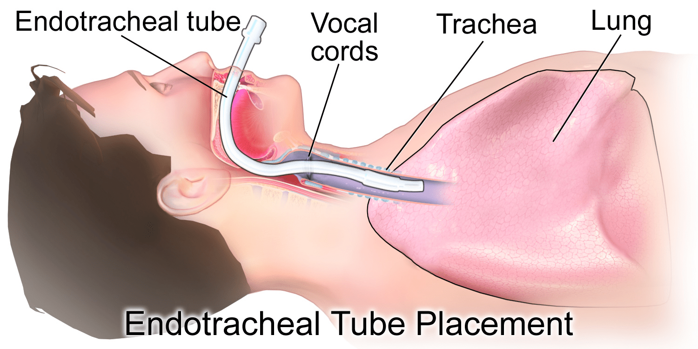
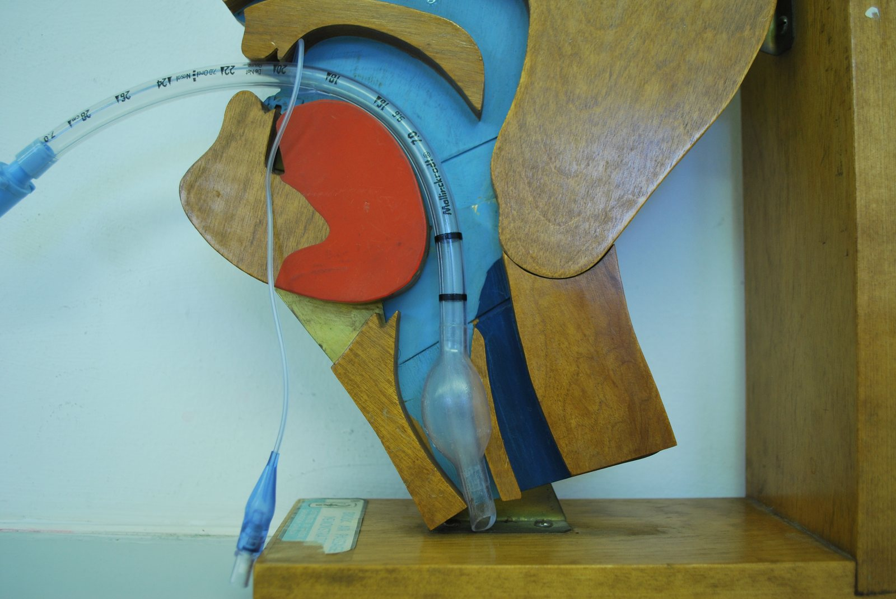

A pressão que o ventilador mostra é medida na boca das vias aéreas — não dentro do alvéolo. Tudo entre a máquina e o pulmão entra no pico. Por isso pico alto com platô normal raramente é o pulmão. Para a Dani.


"Este é o paciente." O alarme de pressão dispara — decida antes de revelar.
Mulher, 54 anos, pós-operatório de cirurgia abdominal eletiva. Pulmões prévios normais, ainda sob efeito anestésico, em VCV de rotina enquanto desperta. Procedimento — uma ponte, não uma doença pulmonar.
O pico de pressão saltou e disparou o alarme. Você faz uma pausa inspiratória: o platô continua 14. A oxigenação está estável. Abra o Circuito e o Laboratório, já carregados com este paciente, para investigar.
Pico de 40 num pós-operatório — o que você faz? Decida e justifique antes de revelar o desfecho.
"Pico alto = pulmão duro." A equipe aprofundou a sedação e reduziu o volume corrente tratando como SDRA incipiente. O pico não cedeu — porque o pulmão nunca foi o problema. A paciente, despertando, mordia o tubo de forma intermitente.
O sinal estava na dissociação: pico alto, platô normal = custo resistivo, antes do alvéolo. Colocou-se um protetor de mordida, aspirou-se o tubo, checou-se dobra e água no circuito. O pico voltou a 20. O alvéolo nunca havia mudado — o problema estava no caminho até ele.
Seis perguntas para localizar o problema: ele está no caminho até o alvéolo, ou no alvéolo?
O gás percorre máquina → circuito → peça Y → tubo → vias → alvéolo. A pressão é medida proximalmente. Introduza uma falha e veja o manômetro reagir: o pico sobe; o alvéolo pode nem perceber.
Cada falha vira resistência ou complacência. Faça a pausa, leia pico e platô, e deixe o veredito localizar o problema. Carregado com o caso tubo mordido
Honestidade do modelo: compartimento único, paciente passivo, R e C constantes. O platô só é fidedigno sem esforço do paciente e com fluxo zero verdadeiro. A pressão de pico depende do fluxo: o mesmo problema resistivo dá pico maior com fluxo inspiratório mais alto. Números são estimativas didáticas.
Cinco questões para fixar a localização do problema. O aprendizado mora no gabarito.